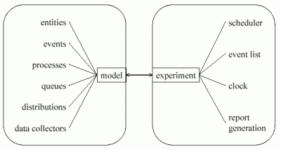

|
||||
| Basic Features | ||||
|
The framework DESMO-J extends Java by adding features which greatly simplify the construction of discrete-event simulation models. It provides the modeller with
| ||||
| Separation of Model and Experiment |
DESMO-J supports the separation of model and experiment, a widely acknowledged requirement of good simulation software as it allows for performing the same experiment with different models which may represent competing system designs or alternative strategies as well as performing different experiments with the same model. In DESMO-J the model class handles all model components whereas the experiment class provides the simulation infrastructure. Both are explicitly connected during a simulation run.  |
|||
| Package Structure |
The framework is structured into several Java packages; the most important include:
Please refer to the version history if you are interested in DESMO-J's development. |
|||
| top | http://desmoj.sourceforge.net/basic_features.html | |||